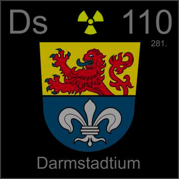

HOME
PREVIOUS
NEXT

Darmstadtium
Atomic Weight: 281[note]
Density: N/A
Melting Point: N/A
Boiling Point: N/A
Darmstadt is the latest city to get an element named after itself. Not many more are in the running, since you need to build huge nuclear accelerators, and elements get harder to make the higher you go.